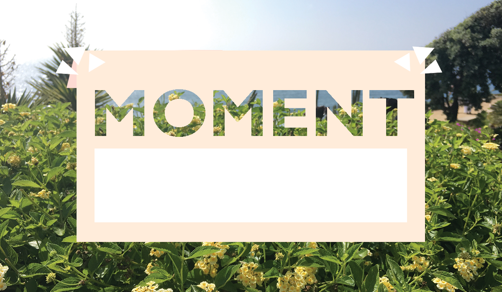
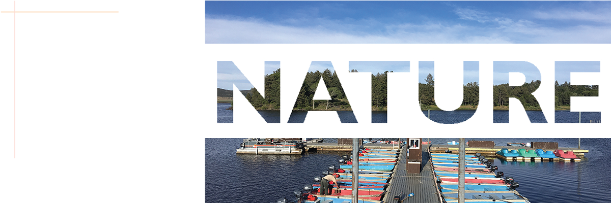
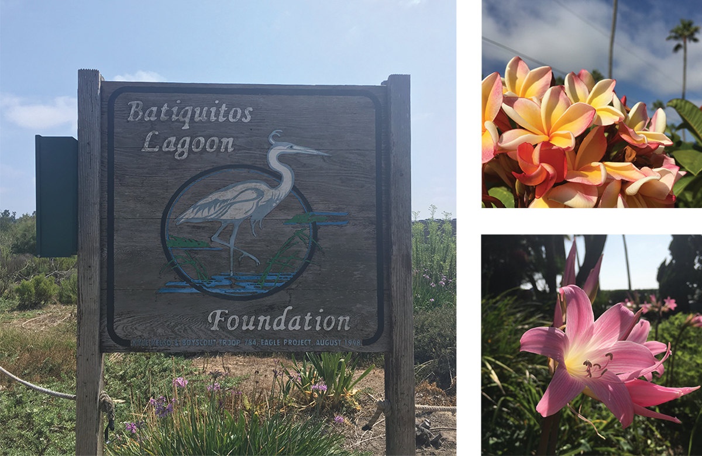
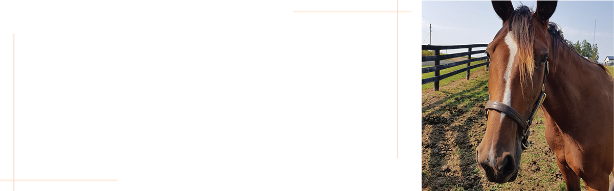

 When you try to control everything you enjoy nothing. 
I cannot control the past because the past is gone. I cannot predict the future because tomorrow has not arrive yet. Sometimes I just need to relax, breath, let go and live in the present moment. Because I can only decide what is happening right now. Gourmet, music and outdoor activates would be the summary of my summer. Those wonderful experiences were really beneficial to my mental and physical health.

SENSING
Ocean and beaches are the major feature of San Diego, I believe most people swimming and surfing in the ocean. I often chose jogging on the beach in order to stretch the joints of my body. Other outdoor actives that I have done in the summer was hiking, walking uphill to the view points to look down at San Diego. It was a amazing experience to embrace the cold breeze from the ocean and appreciate the beauty of nature.



Most of us are very occupied with study and work. As we grow older, we have even more responsibilities such as mortgage, family and children. Sometimes we are too focus on what need to be prepared for the future and we forget to live at the present. My summer experience taught me a lesson that life is too short to not to make the most of it. What we really can do and can change is the moment, which we make decisions and take actions. A piece of reminder for myself is that cherishing this second to apply myself no matter in enjoying myself or chasing my dream. Many years later, I would be grateful to this present me that I created those amazing memories when I look back my past.